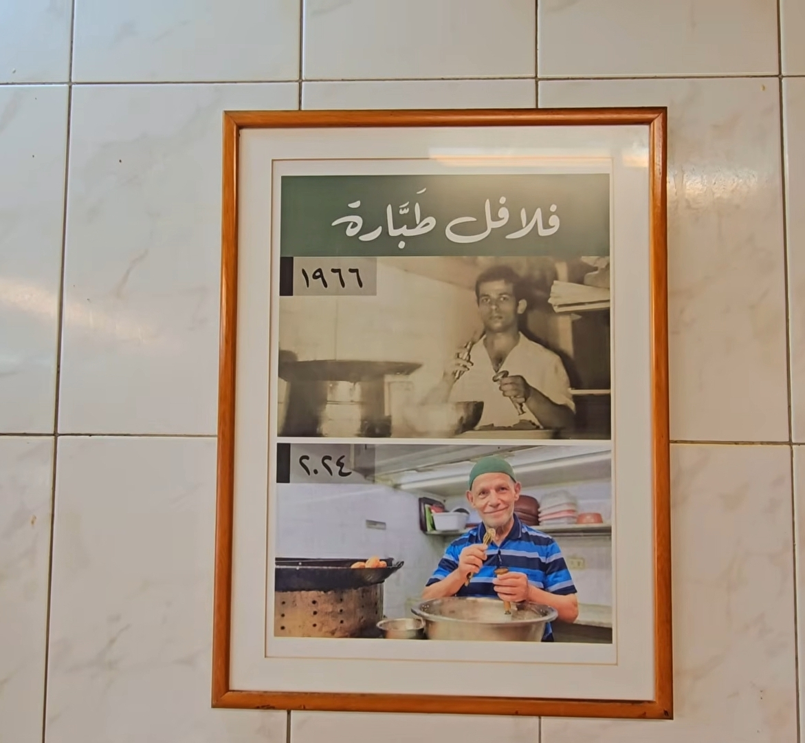
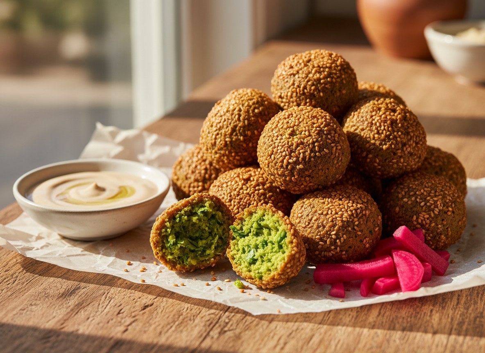
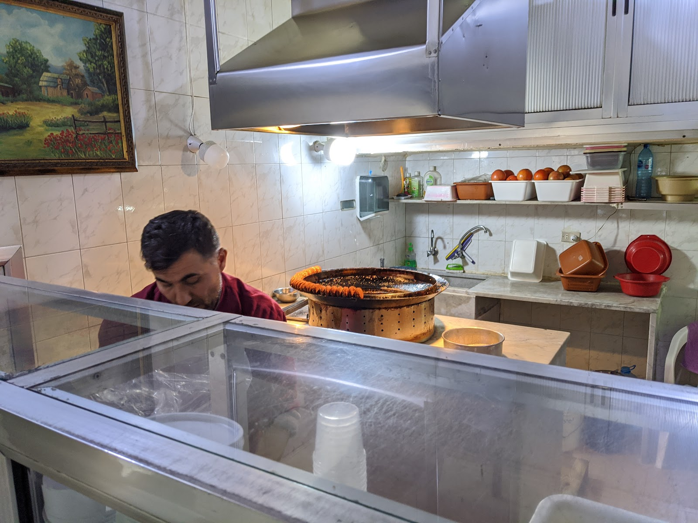
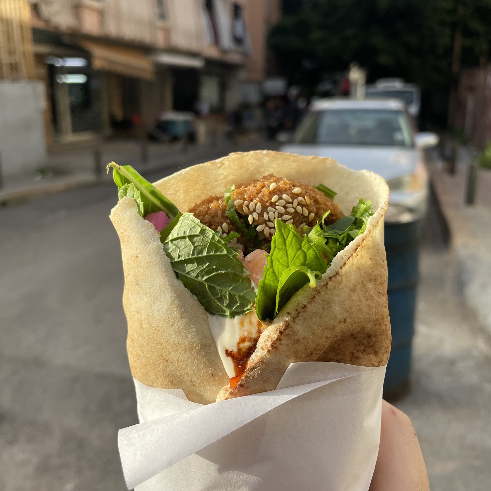

One corner. One family. Six decades. زاوية وحدة. عيلة وحدة. وستّة عقود.






The best falafel in the world. The hajj has been in this shop for more than 60 years. You can always see a crowd any time of the day. They are generous and clean. The very authentic taste of his falafel is unique.
In the restaurant business, where fortunes can rise and fall very quickly, I was curious to find out what the secret was to this restaurant's survival for over 100 years.
It was fresh and absolutely delicious! The staff were extremely nice and welcoming. The falafels were made on the spot and everything tasted so fresh!